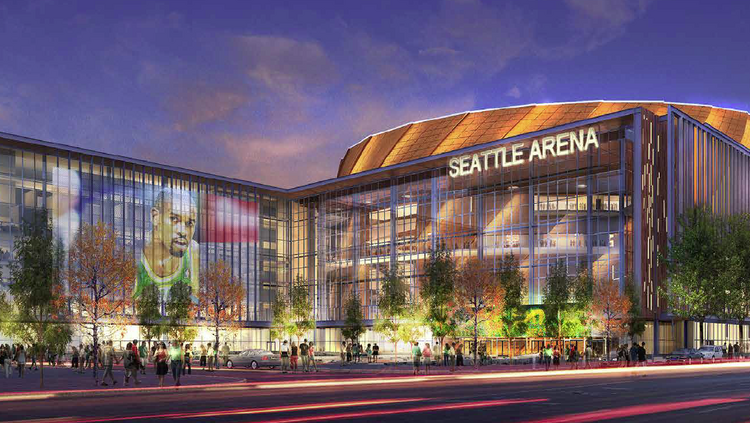

Featured

Northgate Mall Goes Mixed Use
Northgate Mall opened in 1950 as the country's first shopping mall. The redevelopment plan for the historic 55-acre property is one of the largest announcements of 2018.
The Simon Property Group announced details on a major renovation. Re-development will cut retail in half and make room for up to 750,000 square feet of office space, several hundred residential units, restaurants and a hotel.
The Simon Property Group envision retail being on the ground floor of high-density, mixed-use residential, Class A office and hospitality.
Traffic congestion is a big reason for the redevelopment. It can take close to an hour to drive from Northgate to Downtown Seattle during rush hour.
13/03/2018
The Future of SoDo
Traditionally the industrial heart of Seattle, some see it's public transit, highway access, and close proximity to downtown as prime locations for creative mixed-use spaces.
A recent group commisioned with planning the future of SoDo, came up with the 'Sodo Concept'.
The SoDo Concept is an incentive program that would require approximately one floor of new industrial development and allow new transit-oriented office development while severely limiting single-occupancy vehicle and other non-freight trips in the area.
Exploration of the concept is dependent on continuing the prohibition of residential uses and strict parking maximums for office uses, with some advocating for housing around the SoDo light-rail station.
13/03/2018

Hansen Hasn't Given Up On SoDo
With the goal of bringing an NBA team back to Seattle, Chris Hansen proposed building an arena in SoDo nearly six years ago, but his agreement with the City of Seattle is now long expired.
The city has since made a preliminary deal with the L.A. based Oak View Group to rebuild the KeyArena for the future Seattle Sonics.
That's why a few question marks were raised when a Chris Hansen company paid $2.4 million for a small Sodo property just south of where Hansen originally proposed to build his arena and public records show that he may buy more Sodo property.
On March 1st Hansen formed another LLC, WSA Properties XIII but no aquisitions have been recorded so far.
13/03/2018
Microsoft Sparks Redmond Market
On Monday a Microsoft-occupied office campus in Bellevue sold for nearly $225 million, and now three large Redmond properties where Microsoft is a tenant are for sale.
Redmond Town Center, Millennium Corporate Park and the Daytona Laguna campus are on the block, according to commercial real estate broker Mike Schreck, executive managing director at Newmark Knight Frank's Bellevue office.
"It seems like the entire city of Redmond is for sale," he said.
These three properties are expected to draw bids totaling $880 million, according to trade publication Real Estate Alert.
Combined with Monday's sale of Advanta Office Commons in Bellevue, the properties would trade hands for just over $1 billion.
13/03/2017